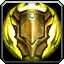
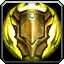

Леди Сильвана Ветрокрылая (англ. Sylvanas Windrunner), Королева банши – верховный правитель Отрекшихся, одной из самых могущественных групп нежити на Азероте. При жизни она была предводителем следопытов Луносвета, и её боевому мастерству не было равных. Во время Третьей войны она храбро защищала Кель'Талас от вторжения Плети, ведомой рыцарем смерти Артасом Менетилом. Сильвана была убита в сражении, и Артас, не позволив ей просто уйти, вырвал её душу и превратил в банши – хитрое и мстительное существо, служающее Королю-личу и преисполненное ненавистью.
Когда контроль Короля-лича над его слугами ослаб, Сильвана получила долгожданную свободу и смогла вернуть своё тело. Пообещав отомстить за своё убийство, она объединила свободную нежить и повела их на войну против Плети. Так появились Отрекшиеся, и Сильвана стала их королевой. В будущем Отрекшиеся стали частью Орды и помогли одержать победу над Королем-личом на северных пустошах Нордскола.
Сильвана столкнулась со множеством проблем. Восстание в её рядах привело к гибели многих воинов Орды, и теперь королеве банши не доверяют многие из её союзников. Сильвана начала укреплять свою территорию в Тирисфальских лесах, чтобы создать правильное государство для своего народа. Хотя она и уверяет, что её лояльность к Орде не ослабла, кое-кто не уверен в её истинных намерениях.
После падения Артаса Менетила Сильвана узнала, что она тоже проклята и должна будет провести вечность среди тьмы и пыток в загробной жизни. Валь'киры предложили ей своё служение, и Сильвана смогла вернуться в мир живых и будет оставаться в нём настолько долго, как существуют её валь'киры. Зная о судьбе, которая неизбежно постигнет её, Сильвана начала больше ценить Отрекшихся, которые стали защитой от ужасающей тьмы. Сильвана возглавила свой народ в агрессивных нападениях на территории Лордерона, и значительная часть материка Восточных королевств уже находится под её контролем.
Сильвана принимала участие в битве на Расколотом берегу, где Альянс и Орда пытались противостоять Пылающему Легиону. Она отдала команду к отступлению, видя, что Вол'джин ранен и что другие вожди почти лишились сил. Хотя из-за поступка Сильваны Орду удалось сохранить в тот день, отступление Орды поставило Альянс в уязвимое положение и, возможно, стало причиной гибели Вариана Ринна. В Оргриммаре Вол'джин, умирающий от отравления Скверной, объявил, что Сильвана станет его преемницей на должности вождя Орды. У погребального костра Вол'джина Сильвана произнесла воинам Орды речь о том, что они должны помочь ей отомстить за гибель прежнего вождя.


 , Protection , Retribution
, Protection , Retribution 


 , Fire
, Fire  , Frost
, Frost 


 , Outlaw
, Outlaw  ,Subtlety
,Subtlety 


 ,Holy
,Holy  ,Shadow
,Shadow 


 ,Frost
,Frost  ,Unholy
,Unholy 


 ,Vengeance
,Vengeance 


 ,Feral
,Feral  ,Guardian
,Guardian  ,Restoration
,Restoration 


 ,Marksmanship
,Marksmanship  ,Survival
,Survival 


 ,Mistweaver
,Mistweaver  ,Windwalker
,Windwalker 


 ,Enhancement
,Enhancement  ,Restoration
,Restoration 


 ,Demonology
,Demonology  ,Destruction
,Destruction 


 ,Fury
,Fury  ,Protection
,Protection